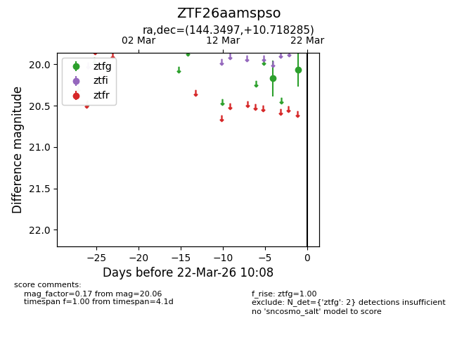
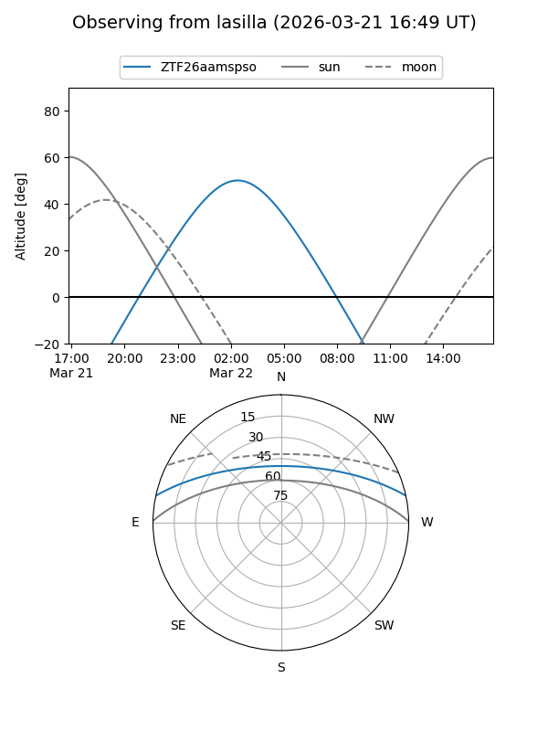
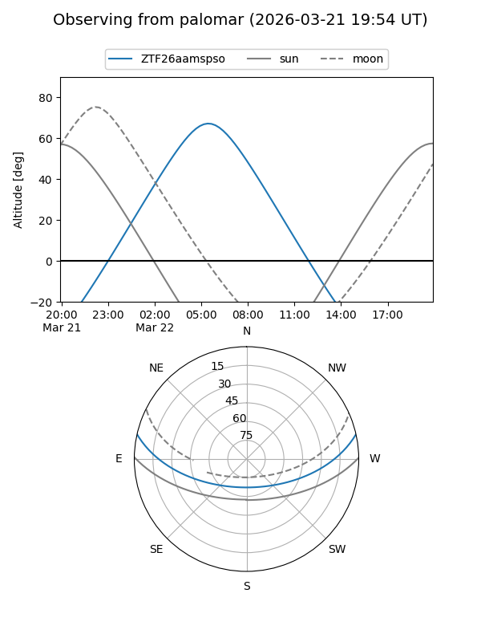

ZTF26aamspso
Target ZTF26aamspso at 2026-03-22 10:11
Aliases and brokers:
FINK: link
Lasair: link
ALeRCE: link
alt names
ZTF26aamspso (ztf,fink_ztf)
Coordinates:
equatorial (ra, dec) = 144.3497,+10.71828
equatorial (HMS+DMS) = 09:37:23.92,+10:43:05.83
galactic (l, b) = (223.0465,+41.61541)
Flags:
Photometry:
last ztfg=20.06
2 ztfg detections
Lightcurve

Visibility


Additional plots